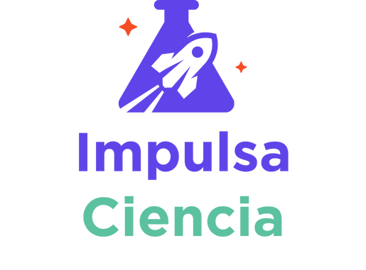
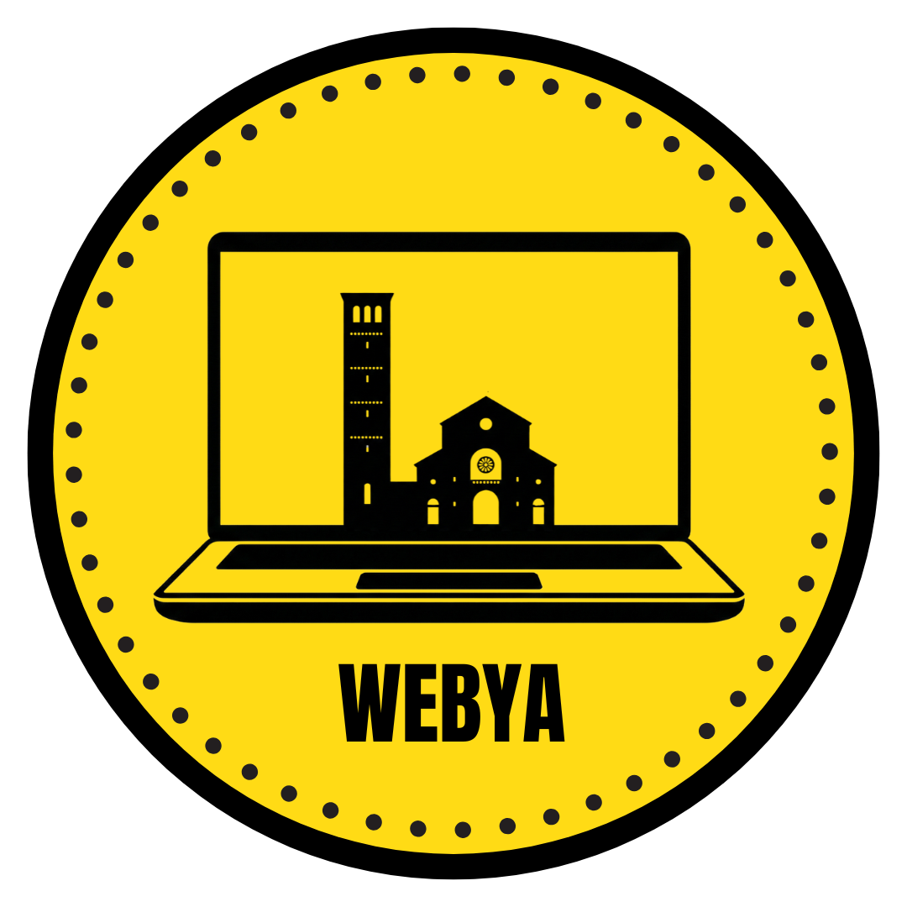

Proyectos
Algunos proyectos que he realizado utilizando diversas tecnologías modernas.

Juego de la vida
Autómata celular implementado con HTML5, CSS3 y JavaScript.
Repositorio
✓
Deploy

Impulsa Ciencia
Plataforma hecha en NodeJS, Mongodb, HTML5, CSS3, Tailwind, JavaScript.
Repositorio
Deploy
Task Management
Aplicación de gestión para una corredora de propiedades, realizada en NodeJS, Mongodb, HTML5, CSS3, JavaScript.
Repositorio
✓
Deploy

Webya
Plataforma hecha en HTML5, CSS3, Tailwind, JavaScript. Soluciones web a empresas que más lo requieran
Repositorio
✓
Deploy